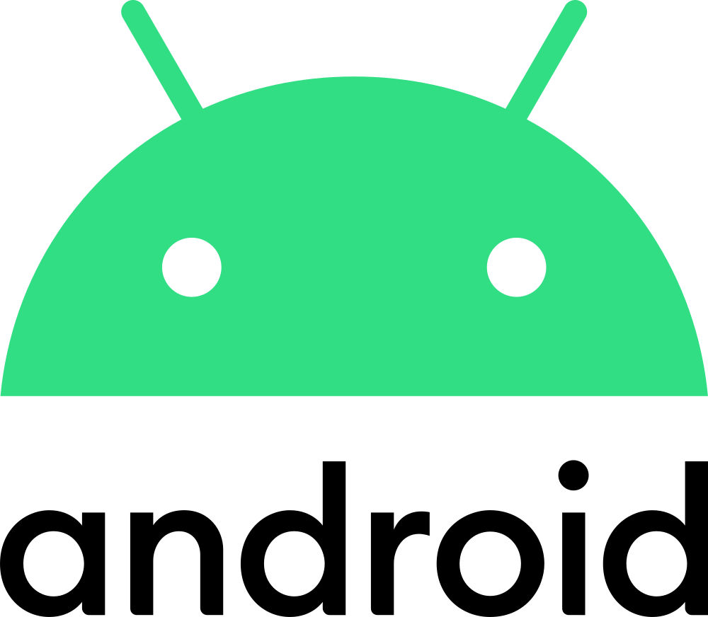

Практична робота · 5 клас · Апаратна і програмна складові
🪪 Паспорт мого пристрою
Дізнайся, яка операційна система встановлена на твоєму комп'ютері чи телефоні, знайди її логотип і запиши, які є програми.
⏱ 15 хв Google Документи💻 📱 Комп'ютер, телефон або планшет
Google Документи💻 📱 Комп'ютер, телефон або планшет
Google Документи💻 📱 Комп'ютер, телефон або планшетЩо має вийти
Паспорт мого пристрою
Пристрій: смартфон
Операційна система: Android
Версія: 14

Програми
YouTube — дивлюся відео.
Камера — фотографую.
Google Classroom — виконую домашні завдання.
Покроково
1
Створи документ
Обери один зі способів:
🎓 Через Google Classroom
- Відкрий завдання → .
- У блоці «Ваша робота»: .
📁 Через Google Диск
- .
- Назви файл: Паспорт пристрою — Прізвище.
Напиши заголовок Паспорт мого пристрою, а під ним — який це пристрій: комп'ютер, ноутбук, телефон чи планшет.
2
Знайди операційну систему та її версію
Обери свій пристрій:
💻 Комп'ютер із Windows
- Натисни разом Win + Pause.
- Знайди рядки Випуск і Версія.
📱 Телефон чи планшет з Android
- .
- Знайди рядок Версія Android.
📱 iPhone чи iPad
- .
- Знайди рядок Версія iOS (на iPad — iPadOS).
Параметри─ ▢ ✕
Характеристики Windows
ВипускWindows 11 Home
Версія24H2
Запиши в документ два рядки: Операційна система: … і Версія: …
Не знайшов? Пункти можуть називатися трохи інакше. Пошукай у налаштуваннях слово «Про» або попроси дорослого допомогти.
3
Додай логотип своєї ОС
- Постав курсор під рядком Версія.
- Відкрий .
- Праворуч з'явиться пошук. Введи, наприклад, логотип Android чи логотип Windows.
- Клацни потрібну картинку й натисни .
Обирай справжній логотип, а не будь-яку картинку. Якщо він завеликий — клацни його й потягни за кутик, щоб зменшити.
4
Запиши програми
- Відкрий список програм: на комп'ютері — кнопка , на телефоні — головний екран.
- Напиши підзаголовок Програми.
- Запиши 5 програм, якими користуєшся: назва — для чого ти її використовуєш.
Ігри теж програми! Але системні налаштування не рахуються — обери ті, у яких ти щось робиш.
Перевір себе: у паспорті є пристрій, назва ОС, її версія, логотип і 5 програм із поясненням.